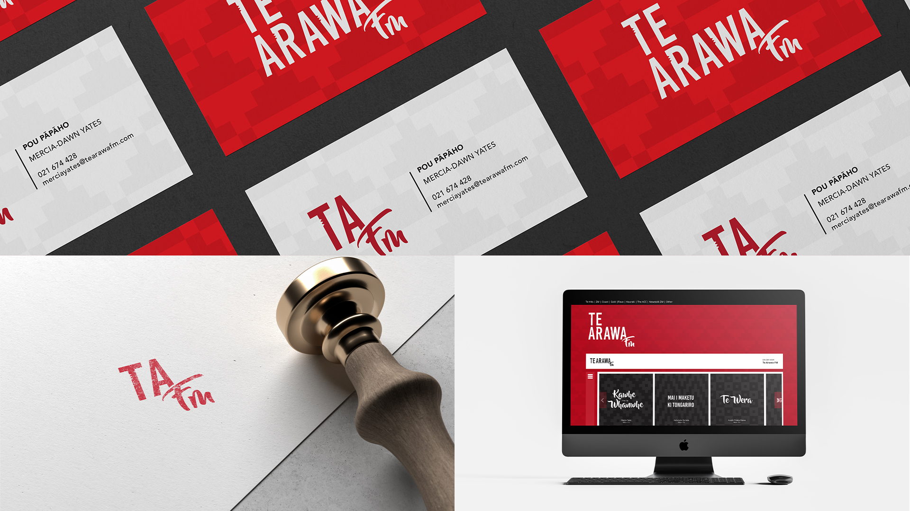

biography
Kia ora, ko Dixie Yates-Francis ahau. He uri tēnei nō Te Aitanga-a-Maahaki, Rongowhakaata, Te Arawa me Ngāti Maniapoto. I will soon graduate with a Bachelor of Design, majoring in Communication Design and minoring in Te Reo Māori. As a visual learner myself, I love communicating ideas visually through design, with my areas of interest being print and branding design.
I was raised in a home surrounded by creative thinkers. Both parents share their love and passion for the arts, whether that be crafting or performing (kapa haka). Growing up, they would always encourage my creative thinking and to let my imagination run free. Design has now become my happy place, where I can express myself through creativity. During my time studying at Waikato, I have been fortunate enough to gain many new skills in communication design and a few other key areas. The design culture here at Waikato is very supportive and very special. Being a Māori student, the design staff always made me feel valued and respected. I was always encouraged to design through my Māori lens – I will forever be grateful for that. I have learned a lot about the different aspects of design, and I have found that my strengths align with print design and branding. Everything I have learned about the world of design has been in recognition to the University of Waikato. It’s allowed me to be where I am today, in my dream job – working for Māori, designing for Māori.
project description
I look to address the problem of consistency in branding across our Iwi (māori) Radio Station in Rotorua. The radio station is called Te Arawa FM. My connection to this radio station is not only because I whakapapa (connect) to this rohe (region), my mother has also been a live presenter for the past three years.
Radio is no longer just an audio experience. Radio is now multimedia. To promote the great work of Te Arawa FM, I've developed a new brand identity and applied that across a range of media. This brand identity utilises traditional visual features from the rohe to support and build the foundation for this modern yet traditionally grounded iwi radio. A brand guideline book was created to encourage our iwi radio station to uphold consistency in branding across all media. Within each component that makes up the brand guidelines, there are whakamārama (explanations) about why and how these specific elements tie in with Te Arawa FM as the radio station and Te Arawa, as the people. This project is about "breaking down the barriers of what it means to be a local radio station."
Te Arawa FM has a target audience of 5 - 60+ years of age. This target audience is so broad because of the range of live shows – some cater to kids, to teens, to young and old adults, and to the elderly. Because I'm focusing my attention on the multimedia aspect, the end-users of the solution(s) are young Māori, aged 18 – 30.
Design Your FYOUTURE

For more information contact us
Email: degreeshow@waikato.ac.nz
Faculty phone: 0800 924 528
Faculty information: cs.waikato.ac.nz